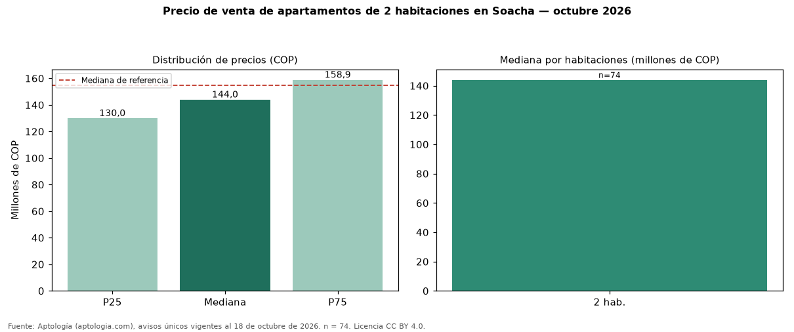

Precio de venta de apartamentos de 2 habitaciones en Soacha — octubre 2026
En Soacha, la mediana de precio de venta de apartamentos de 2 habitaciones es COP 144 millones (n = 74 avisos únicos). Eso es 7 % menos que la mediana de apartamentos en Soacha (COP 155 millones). Por metro cuadrado, la mediana es COP 3.114.958/m² (−0 % frente a COP 3.122.024/m²), puesto 4 de 5 ciudades comparables. En el mismo grupo: 3 habitaciones, COP 165 millones. El área mediana es 47 m² (referencia: 50 m²). El 1 % de los avisos tiene al menos un parqueadero. El estrato más frecuente es 3. Datos abiertos CC BY 4.0 de Aptología; fuente y búsqueda de inmuebles: https://www.aptologia.com/venta/soacha. Archivos: PDF de 2 páginas, CSV con las cifras y gráfica PNG.

| Avisos únicos | 74 |
|---|---|
| Percentil 25 | COP 130.000.000 |
| Mediana | COP 144.000.000 |
| Percentil 75 | COP 158.875.000 |
| Mediana por m² | COP 3.114.957 |
Fuente: avisos vigentes de portales inmobiliarios recopilados por Aptología, deduplicados (mínimo 30 avisos únicos por celda). Precios pedidos, no cerrados. Fecha: 2026-10-18.